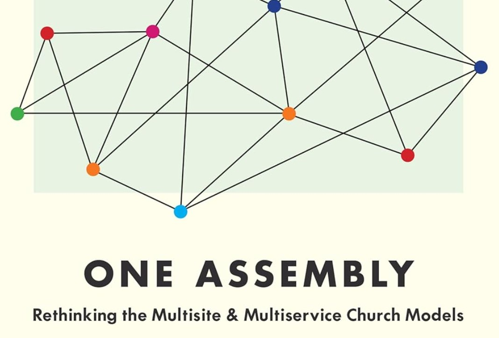

One Assembly (Book Review)
November 17, 2024

In the 2,000 years of Christian history, full buildings have always been a problem, but the multiservice church is a relatively new phenomenon, beginning only in the last century. [
1] The multisite church is an even newer phenomenon. However, both are now commonplace and almost normative when it comes to “how church works.” The positives of “multichurch” are that an individual church can quickly reach more people without the hassle of church planting, and a gifted preacher can expand his influence. The negatives are that “multichurch” enhances church consumerism and dampens the instinct to church plant and revitalize.
In his book
One Assembly, Leeman questions the scriptural warrant for multisite churches and argues that an
ekklēsia is not an
ekklēsia unless it gathers. [
2] In his argument, he looks at every supposed multisite church in the Bible and shows that there is no concrete evidence that the biblical authors ever used
ekklēsia to describe an entity other than the universal or locally assembled church. He also traces the usage of
ekklēsia from Classical Greek and shows that
ekklēsia can mean more than an assembly, but never
less. He also shows from Matthew 18 that Jesus’s authority and presence is specifically found in the act of gathering. Finally, Leeman provides a vision for a one-assembly church that focuses not on expanding a “brand,” but on a catholic approach to church planting and partnership.
Leeman’s case is strong and compelling, both from a cultural and exegetical standpoint.
Certainly, most multisite practitioners have godly motives, adding services or campuses in order to reach more people for Christ. However, the unintentional side effect of “multichurch” is that it generates a consumeristic attitude towards church, leading people to view church as a performance to watch and not a gathering of saints. It implicitly
defines the concept of church around something other than the gathering even when the people may claim that church is about the people. Leeman helpfully identifies these side effects and notes the connection between these effects and the growing influence of market strategies in the world of church growth strategy.
Leeman’s critique of the biblical “proof” for multisite churches is scathing, and he convincingly demonstrates that the so-called evidence for multisite in the Bible is pure conjecture and speculation. Leeman’s catalogue of all the instances of
ekklēsia in the Bible shows that it cannot be clearly demonstrated that
ekklēsia was ever used to describe a regional body of believers that never actually gathered.
The weakest link in Leeman’s exegetical argument is probably the church in Jerusalem. It says in Acts 2 that the saints in Jerusalem met in
homes together to “break bread.” If this refers to the Lord’s supper, then Leeman’s argument collapses: the Jerusalem saints undoubtedly had one
church, but they took the Lord’s supper separately in
homes. Leeman’s response is that “breaking bread” refers to table fellowship and not the Lord’s supper, and that this could be considered an early example of small groups within the church.
Finally, Leeman’s vision for one-assembly churches pursuing catholic interests, collaborating for the sake of the kingdom of God was inspiring to me. I personally hope that the instinct of multisite “branding” will one day fade away so that churches will once again value collaboration amid independence. Churches that are motivated to plant and revitalize will reap much greater rewards in the long run than churches that make short-term fixes like multiple services or sites.
In conclusion, as Leeman points out, the essence of the church (and the aspect in which Jesus presides over) is the gathering, and churches should not spotlight leadership, style, vision, ministry “philosophy, or even preaching above the centrality of the gathering.
This book will not convince everyone, but Leeman's case for single-assembly churches is substantial and challenging to refute. Leeman's work on this topic will be of interest to all pastors and theological students.
Purchase on
Amazon
Leeman, Jonathan.
One Assembly: Rethinking the Multisite and Multiservice Church Models. Wheaton, IL: Crossway, 2020.